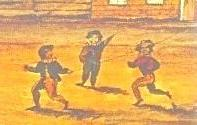

|
Children of all shapes and sizes were an outstanding feature of early Albany life. However, the life of a child growing up in the pre-industrial city was much different than it is today.  From the earliest "comprehensive" census in 1697, those under sixteen accounted for almost half of the city's overall population. Although city homes were small in size, Albany families could become quite large. Because of the dynamic and evolving nature of the community economy and the diverse character of its society, Albany couples married younger than in New England or the South. These unions often resulted in 8-10 births if both partners survived. Although half of those babies might not survive to reach marriage age, large Albany families were hard pressed - particularly during the peak childbearing years. The life and family of Sara Gansevoort illustrates many of these themes.
At the same time, children were expected to contribute to the family economy - performing household chores, helping in their father's work, and running errands. By the time they reached the age of eight, they were expected to perform basic chores on their own. By the onset of adolescence, boys had learned enough to help out in the business, trade, and service of their more adult mentor. A few years later, they might have mastered a useful activity and were ready to join their middle-aged father - providing a real boost for a family-based enterprise until ability and opportunity enabled them to carry on independently. At that point, young Albany men could marry and begin the cycle again. Overflow younger sons might be sent to an uncle or elsewhere to learn an appropriate skill. Comparatively few early Albany boys set off on their own. Because virtually all Albany mothers were preoccupied with childbearing until they reached middle age, domestic functions fell on the family's daughters at a young age and escalated in responsibility as they reached marriage age. Even when Albany mothers had finished having babies, most often they turned to a business, production, or service activity - adding another dimension to the family economy. While mothers provided guidance, the actual operation of the household or domestic economy fell to the daughters - running more smoothly as each sister grew into adolescence. The research program implemented by the Colonial Albany Social History Project has enabled us to appreciate some of the demographic contours of childhood in early Albany. We have some feeling for the size of city families, survival rates, and of what happened to those who grew up in Albany households. Community-based resources also have yielded information on when childhood ended. Beyond that, children thus far have proven to be historically inarticulate and also unarticulated in the record. Learning more about their lives deserves high priority in our future activities. |